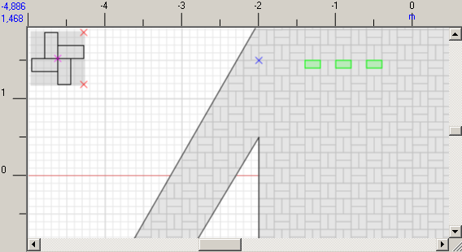
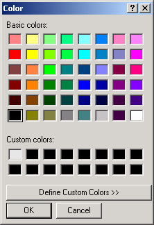
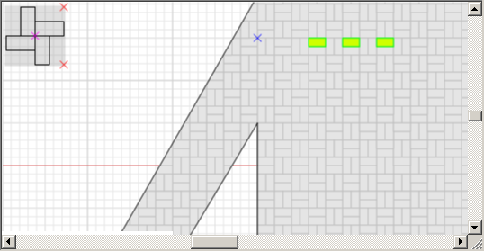
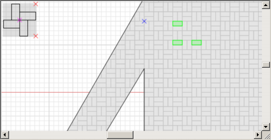

To change the tiles' color, select them first, and then change their color.
Press Select tile and select necessary tiles: the selected tiles will be colored green.

To select multiple tiles, press and hold Shift and move the pointer over the tiles you want to select: the tile will be marked as selected without left click.
After you have selected all necessary tiles, right click on the plot and select Change color in the context menu and select color in the pop-up window.


|
Note. The first color sample present in the "Additional colors" section is the default color of a tile. If you need to return the default color of a tile, choose this color sample.
|
As a result, the project now looks like at the screenshot below:

You can also use the context menu to revert the coloring to default values. The same options are present on the toolbar -
You can also make use of the additional ways to color patterns.
1. Simple way: evenly distribute single colored tiles. Select several tiles on the plot and press the Multiply selection button
Select three tiles as shown on the screenshot below: select the top-left tile first.

Now press

Now select the color using the Change color button
If needed, perform the procedure once again to color other tiles:
2. The more difficult way: evenly distribute the geometrical pattern. You perform all the actions described above; the only difference is that you now select a group of tiles to create a geometrical pattern. For example:
Then press
Now, select tiles that will become basic tiles of the geometrical patterns:
Then press Multiply selection

Now you can assign the color for the selected tiles. Do not forget to deselect them afterwards.
|
|
To select a particular area of the plot, click Select tile , but before this deactivate other tools. Press and hold the left button and select a rectangle.
Note that the program will select all tiles in the focus, even if a stitch of the tile was selected. You can select areas and separate tiles more than once.

If you want the program to select only those tiles that are entirely in the focus, press and hold shift while selecting the tiles.
Texture is another, a more rare effect that you can add to the plot. To lay the texture, press Set texture
The result will be immediately shown on the plot.

To delete a texture, click Delete texture
From this moment you can consider your project done: view the summary report on the expected number of tiles to be used; enter comments, if there are any and then print the project, report and comments. After you are done, save the project.